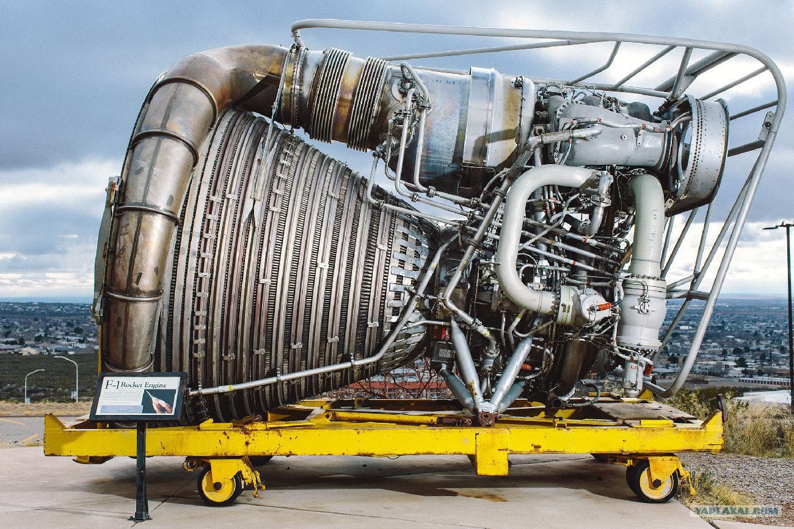
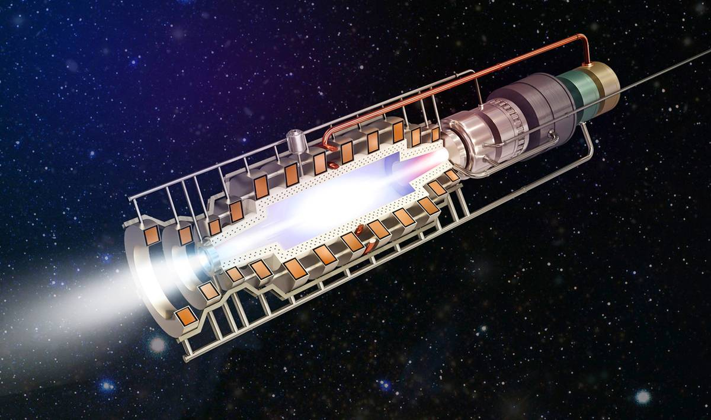
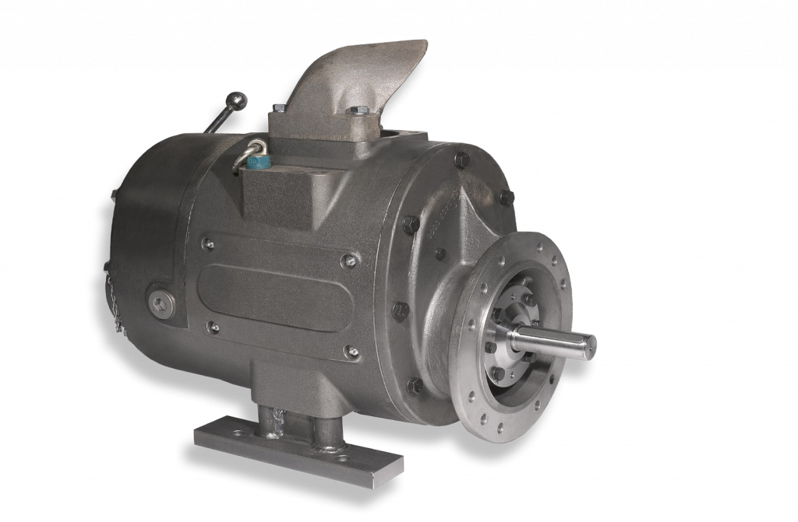
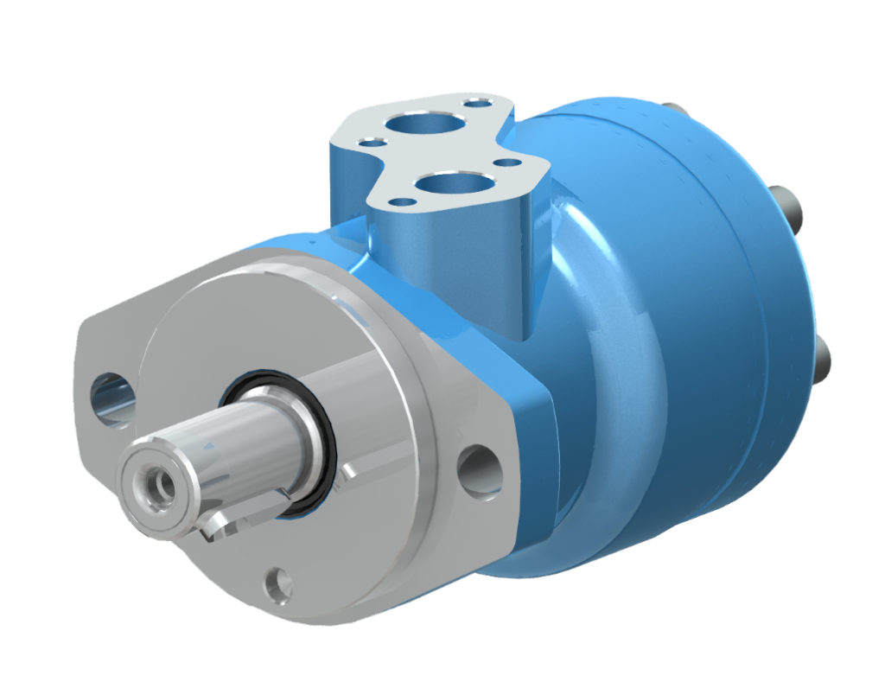
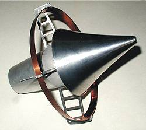

Про двигатели внутреннего сгорания все ясно и понятно объяснено вот в этом разделе.
Но ведь помимо ДВС существуют и другие типы двигателей с другим принципом работы.
Все возможные варианты перевода энергии химической реакции в движение чего-либо представлены ниже:
Что-то на ракетном
Реактивное движение может быть осуществлено силой реакции струи различных рабочих тел, однако при использовании реактивного принципа для движения в атмосфере таких тел, как самолёт или управляемый снаряд, виды рабочего тела ограничены. Практически для этой цели могут быть использованы только два вида рабочего тела.
Во-первых в качестве рабочего тела может быть использован атмосферный воздух, который предварительно должен быть сжат и подогрет. Для этого его смешивают с продуктами горения, образующимися при сгорании топлива. Энергия, выделяющаяся при сгорании топлива, используется для повышения температуры воздуха до желаемой величины.
Во-вторых, в качестве рабочего тела можно использовать газы высокого давления и высокой температуры, которые образуются в большом количестве при химической реакции, происходящей без участия атмосферного воздуха. Газовую струю, полученную указанным способом, называют ракетной струёй, а систему, в которой происходит химическая реакция, включая реактивное сопло, - ракетным двигателем.
1) тепловые реактивные двигатели (называемые также воздушно-реактивными двигателями), использующие или расходующие для создания газовой струи атмосферный воздух;
2) ракетные двигатели, которые не используют или не расходуют атмосферный воздух.
В нашем случае термин "реактивное движение" применяется к движению, осуществляемому с помощью двигателей двух типов: тепловых реактивных двигателей и ракетных двигателей.
Тепловые реактивные двигатели можно разделить на три основных типа:
1) прямоточные реактивные двигатели;
2) пульсирующие реактивные двигатели;
3) турбореактивные двигатели.
Электричество
Каждый электродвигатель обладает некоторыми отличительными свойствами, которые обуславливают его область применения, в которой он наиболее выгоден. Синхронные, асинхронные, постоянного тока, коллекторные, бесколлекторные, вентильно-индукторные, шаговые.
Двигатель постоянного тока.
С этим двигателем все должны быть знакомы с детства, потому что именно этот тип двигателя стоит в большинстве старых игрушек. Внутри такого двигателя на валу установлен контактный узел – коллектор, переключающий обмотки на роторе в зависимости от положения ротора. Постоянный ток, подводимый к двигателю, протекает то по одним, то по другим частям обмотки, создавая вращающий момент. Двигатели постоянного тока бывают как очень маленького размера (вибромоторчик в телефоне), так и довольно большого – обычно до мегаватта (их устанавливают в электровозы). Главная проблема всех ДПТ, а в особенности ДПТ большой мощности – это коллекторный узел. Скользящий контакт сам по себе является не очень хорошей затеей, а скользящий контакт на киловольты и килоамперы – и подавно. В потребительском качестве ДПТ хорош своей простотой с точки зрения управляемости. Его момент прямо пропорционален току якоря, а частота вращения (по крайней мере холостой ход) прямо пропорциональна приложенному напряжению. Поэтому до наступления эры микроконтроллеров, силовой электроники и частотного регулируемого привода переменного тока именно ДПТ был самым популярным электродвигателем для задач, где требуется регулировать частоту вращения или момент.
Универсальный коллекторный двигатель.
Конструкция универсального коллекторного электродвигателя не имеет принципиальных отличий от конструкции коллекторного электродвигателя постоянного тока с обмотками возбуждения, за исключением того, что вся магнитная система (и статор, и ротор) выполняется шихтованной и обмотка возбуждения делается секционированной. Шихтованная конструкция и статора, и ротора обусловлена тем, что при работе на переменном токе их пронизывают переменные магнитные потоки, вызывая значительные магнитные потери. Универсальный коллекторный электродвигатель может быть включен как с последовательным, так и с параллельным и независимым возбуждением.
Асинхронный электродвигатель.
Еще более распространенным, чем коллекторные двигатели, является асинхронный двигатель. Только распространен он в основном в промышленности – где присутствует трехфазная сеть. его статор – это распределенная двухфазная или трехфазная (реже многофазная) обмотка. Она подключается к источнику переменного напряжения и создает вращающееся магнитное поле. Ротор можно представлять себе в виде медного или алюминиевого цилиндра, внутри которого находится железо магнитопровода. К ротору в явном виде напряжение не подводится, но оно индуцируется там за счет переменного поля статора (поэтому двигатель на английском языке называют индукционным). Возникающие вихревые токи в короткозамкнутом роторе взаимодействуют с полем статора, в результате чего образуется вращающий момент.
Синхронный электродвигатель.
Конструктивно синхронный электродвигатель состоит из неподвижного элемента, подвижной части, обмоток различного назначения, может комплектоваться коллекторным узлом. В основе работы синхронного электродвигателя лежит взаимодействие магнитного потока, генерируемого рабочими обмотками с постоянным магнитным потоком. Наиболее распространенной моделью синхронной электрической машины является вариант с рабочей обмоткой на статоре и обмоткой возбуждения на роторе. Основным отличием синхронного электродвигателя от асинхронного заключается в принципе преобразования электрической энергии в механическое вращение. У синхронного электродвигателя процесс вращения ротора идентичен вращению рабочего электромагнитного поля, вырабатываемого трехфазной сетью. А вот у асинхронного рабочее поле самостоятельно наводит ЭДС в роторе, которая уже затем вырабатывает собственный поток взаимоиндукции и приводит вал во вращение. В результате чего асинхронные электрические машины получают разность во вращении рабочего поля и нагрузки на валу, что выражается физической величиной – скольжением
По большому счету, химический двигатель - это тот же ракетный двигатель, просто с другим видом топлива.

Этот тип двигателей на сегодняшний день является единственным, который массово используется для выведения в открытый космос космических аппаратов, кроме того, он нашел применение и в военной промышленности. Химические двигатели делятся на твердо- и жидкотопливные в зависимости от агрегатного состояния ракетного топлива. Твердотопливный двигатель вмещает в своем корпусе топливо и окислитель в твердом агрегатном состоянии, причем контейнер с топливом – это одновременно и камера сгорания. Топливо обычно имеет форму стержня с центральным отверстием. В процессе окисления стержень начинает сгорать от центра к периферии, а газы, полученные в результате сгорания, выходят через сопло, образуя тягу. Это самая простая конструкция среди всех ракетных двигателей.
В жидкостных РД топливо и окислитель находятся в жидком агрегатном состоянии в двух раздельных резервуарах. По каналам подачи они попадают в камеру сгорания, где смешиваются и происходит процесс горения. Продукты сгорания выходят через сопло, образуя тягу. В качестве окислителя обычно используется жидкий кислород, а топливо может быть разным: керосин, жидкий водород и т.д.
Ядерная машина
Как ни странно, ядерный двигатель тоже считается ракетным двигателм, и используется он в, представляете, ракетах!

Этот тип РД в отличие от химических вырабатывает энергию не при сгорании топлива, а в результате нагревания рабочего тела энергией ядерных реакций.
Ядерные ракетные двигатели бывают газо-, жидко- и твердофазными в зависимости от агрегатного состояния ядерного топлива. Топливо в твердофазных ЯРД – это ТВЭЛы, такие же, как в ядерных реакторах. Они находятся в корпусе двигателя и в процессе распада делящегося вещества выделяют тепловую энергию. Рабочее тело – газообразный водород или аммиак – контактируя с ТВЭЛом, поглощает энергию и нагревается, увеличиваясь в объеме и сжимаясь, после чего выходит через сопло под высоким давлением.
Принцип работы жидкофазного ЯРД и его устройство аналогично твердофазным, только топливо находится в жидком состоянии, что позволяет увеличить температуру, а значит и тягу.
Газофазные ЯРД работают на топливе в газообразном состоянии. Обычно в них используется уран. Газообразное топливо может удерживаться в корпусе электрическим полем или же находится в герметичной прозрачной колбе – ядерной лампе. В первом случае возникает контакт рабочего тела с топливом, а также частичная утечка последнего, поэтому кроме основной массы топлива в двигателе должен быть предусмотрен его запас для периодического пополнения. В случае с ядерной лампой утечки не происходит, а топливо полностью изолировано от потока рабочего тела.
Пневматика

Пневмодвигатели, они же пневмомоторы - это устройства, преобразующие энергию сжатого воздуха в механическую работу. В широком смысле слова, механическую работу пневматического двигателя понимают как линейное или ротационное движение - однако, все же, пневмодвигатели, создающие линейное возвратно-поступательное движение, чаще называют пневмоцилиндрами, а понятие «пневматического двигателя» обычно ассоциируется с ротацией вала. В свою очередь, ротационные пневмодвигатели подразделяются, по принципу своей работы, на лопаточные (они же пластинчатые) и поршневые.
Лопаточный пневмодвигатель состоит из цилиндра-корпуса, в котором на подшипниках размещен ротор - причем, размещен не прямо по центру полости, а со смещением относительно последнего. По всей длине ротора прорезаны пазы, в которые вставлены изготовленные из графита или иного материала лопатки. Лопатки выталикаются из пазов ротора действием пружин, прижимаясь к стенкам корпуса и образуя между своей, корпуса и ротора поверхностями полость - рабочую камеру.
Сжатый воздух подается на вход рабочей камеры (подавать его можно с обеих сторон) и толкает лопатки ротора, что, в свою очередь, вызывает вращение последнего. Сжатый воздух проходит в полости между платинками и поверхностями корпуса и ротора до выходного отверстия, через которое и выбрасывается в атмосферу. В пластинчатых пневмодвигателях, вращающий момент определяется площадью поверхности лопаток, подвергающейся давлению воздуха, и уровнем этого давления.
Гидравлика
Гидравлические двигатели преобразуют гидравлическое давление в силу, способную генерировать большую мощность.

Это тип привода, который преобразует давление движущейся гидравлической жидкости в крутящий момент и энергию вращения.
Гидравлические двигатели являются важным компонентом в области гидравлики, специальной формы передачи энергии, которая использует энергию, передаваемую при перемещении жидкостей под давлением, и преобразует ее в механическую энергию.
С технической точки зрения замкнутая механическая система, которая использует жидкость для производства гидравлической энергии, известна как гидравлический силовой агрегат или гидравлический силовой агрегат.
Блоки, показанные на рисунке, обычно включают резервуар, насос, систему трубопроводов / трубопроводов, клапаны и приводы (включая как цилиндры, так и двигатели).
Жидкости представляют собой «среднее» состояние между газами и твердыми телами в спектре материи. Несмотря на это, жидкости представляют собой твердые тела в гораздо большей степени, чем газы, в одном важном аспекте: они практически несжимаемы.
Одним из следствий этого является то, что сила, приложенная к одной точке в ограниченной жидкости, может довольно эффективно передаваться в другую точку той же жидкости.
Эта реальность составляет основу механической энергии, которую могут производить гидравлические системы.
Лазер

Лазерный реактивный двигатель — ракетный двигатель, в котором рабочее тело получается путём испарения твёрдого материала или разогрева газа лазерным лучом.
Используемый для разгона лазер чаще всего располагается вне самого летательного аппарата. При расположении лазера в начальной точке движения основной проблемой при перемещении на большие расстояния становится торможение аппарата в конечной точке маршрута.
Данный тип двигателя эффективнее использовать в вакууме, где отсутствует рассеяние лазерного луча атмосферой.
Американские разработчики в начале 90-х считали, что лазерный двигатель должен снизить себестоимость вывода грузов на орбиту за счёт того, что лазер, как основной источник энергии, используется многократно в отличие от ракет-носителей. Российскими исследователями отмечается в качестве преимущества возможность отказа от использования окислителя.
Лазерные двигатели, использующие другие движители, также, как правило, используют внешний по отношению к объекту лазер для передачи энергии.
В частности, под "лазерным" двигателем может пониматься комбинация внешнего разгонного лазера с расположенным на аппарате "парусом" из специального материала.
В 2007-м году группа японских учёных во главе с Хидэки Окамурой разработала модель маломощного двигателя, в котором движение придается металлическому диску путём его нагрева лазерным лучом.[1] Лазер зелёного цвета с длиной волны 532 нм нагревает металл, что приводит к его расширению и возникновению на поверхности быстро перемещающихся эластичных волн, которые двигаются вокруг центра кольца. При соприкосновении с осью, на которой находится диск, он начинает вращаться.
Андрей Company. Все имеющиеся у меня права защищены

 С этим двигателем все должны быть знакомы с детства, потому что именно этот тип двигателя стоит в большинстве старых игрушек. Внутри такого двигателя на валу установлен контактный узел – коллектор, переключающий обмотки на роторе в зависимости от положения ротора. Постоянный ток, подводимый к двигателю, протекает то по одним, то по другим частям обмотки, создавая вращающий момент. Двигатели постоянного тока бывают как очень маленького размера (вибромоторчик в телефоне), так и довольно большого – обычно до мегаватта (их устанавливают в электровозы). Главная проблема всех ДПТ, а в особенности ДПТ большой мощности – это коллекторный узел. Скользящий контакт сам по себе является не очень хорошей затеей, а скользящий контакт на киловольты и килоамперы – и подавно. В потребительском качестве ДПТ хорош своей простотой с точки зрения управляемости. Его момент прямо пропорционален току якоря, а частота вращения (по крайней мере холостой ход) прямо пропорциональна приложенному напряжению. Поэтому до наступления эры микроконтроллеров, силовой электроники и частотного регулируемого привода переменного тока именно ДПТ был самым популярным электродвигателем для задач, где требуется регулировать частоту вращения или момент.
С этим двигателем все должны быть знакомы с детства, потому что именно этот тип двигателя стоит в большинстве старых игрушек. Внутри такого двигателя на валу установлен контактный узел – коллектор, переключающий обмотки на роторе в зависимости от положения ротора. Постоянный ток, подводимый к двигателю, протекает то по одним, то по другим частям обмотки, создавая вращающий момент. Двигатели постоянного тока бывают как очень маленького размера (вибромоторчик в телефоне), так и довольно большого – обычно до мегаватта (их устанавливают в электровозы). Главная проблема всех ДПТ, а в особенности ДПТ большой мощности – это коллекторный узел. Скользящий контакт сам по себе является не очень хорошей затеей, а скользящий контакт на киловольты и килоамперы – и подавно. В потребительском качестве ДПТ хорош своей простотой с точки зрения управляемости. Его момент прямо пропорционален току якоря, а частота вращения (по крайней мере холостой ход) прямо пропорциональна приложенному напряжению. Поэтому до наступления эры микроконтроллеров, силовой электроники и частотного регулируемого привода переменного тока именно ДПТ был самым популярным электродвигателем для задач, где требуется регулировать частоту вращения или момент.
 Конструкция универсального коллекторного электродвигателя не имеет принципиальных отличий от конструкции коллекторного электродвигателя постоянного тока с обмотками возбуждения, за исключением того, что вся магнитная система (и статор, и ротор) выполняется шихтованной и обмотка возбуждения делается секционированной. Шихтованная конструкция и статора, и ротора обусловлена тем, что при работе на переменном токе их пронизывают переменные магнитные потоки, вызывая значительные магнитные потери. Универсальный коллекторный электродвигатель может быть включен как с последовательным, так и с параллельным и независимым возбуждением.
Конструкция универсального коллекторного электродвигателя не имеет принципиальных отличий от конструкции коллекторного электродвигателя постоянного тока с обмотками возбуждения, за исключением того, что вся магнитная система (и статор, и ротор) выполняется шихтованной и обмотка возбуждения делается секционированной. Шихтованная конструкция и статора, и ротора обусловлена тем, что при работе на переменном токе их пронизывают переменные магнитные потоки, вызывая значительные магнитные потери. Универсальный коллекторный электродвигатель может быть включен как с последовательным, так и с параллельным и независимым возбуждением.
 Еще более распространенным, чем коллекторные двигатели, является асинхронный двигатель. Только распространен он в основном в промышленности – где присутствует трехфазная сеть. его статор – это распределенная двухфазная или трехфазная (реже многофазная) обмотка. Она подключается к источнику переменного напряжения и создает вращающееся магнитное поле. Ротор можно представлять себе в виде медного или алюминиевого цилиндра, внутри которого находится железо магнитопровода. К ротору в явном виде напряжение не подводится, но оно индуцируется там за счет переменного поля статора (поэтому двигатель на английском языке называют индукционным). Возникающие вихревые токи в короткозамкнутом роторе взаимодействуют с полем статора, в результате чего образуется вращающий момент.
Еще более распространенным, чем коллекторные двигатели, является асинхронный двигатель. Только распространен он в основном в промышленности – где присутствует трехфазная сеть. его статор – это распределенная двухфазная или трехфазная (реже многофазная) обмотка. Она подключается к источнику переменного напряжения и создает вращающееся магнитное поле. Ротор можно представлять себе в виде медного или алюминиевого цилиндра, внутри которого находится железо магнитопровода. К ротору в явном виде напряжение не подводится, но оно индуцируется там за счет переменного поля статора (поэтому двигатель на английском языке называют индукционным). Возникающие вихревые токи в короткозамкнутом роторе взаимодействуют с полем статора, в результате чего образуется вращающий момент.
 Конструктивно синхронный электродвигатель состоит из неподвижного элемента, подвижной части, обмоток различного назначения, может комплектоваться коллекторным узлом. В основе работы синхронного электродвигателя лежит взаимодействие магнитного потока, генерируемого рабочими обмотками с постоянным магнитным потоком. Наиболее распространенной моделью синхронной электрической машины является вариант с рабочей обмоткой на статоре и обмоткой возбуждения на роторе. Основным отличием синхронного электродвигателя от асинхронного заключается в принципе преобразования электрической энергии в механическое вращение. У синхронного электродвигателя процесс вращения ротора идентичен вращению рабочего электромагнитного поля, вырабатываемого трехфазной сетью. А вот у асинхронного рабочее поле самостоятельно наводит ЭДС в роторе, которая уже затем вырабатывает собственный поток взаимоиндукции и приводит вал во вращение. В результате чего асинхронные электрические машины получают разность во вращении рабочего поля и нагрузки на валу, что выражается физической величиной – скольжением
Конструктивно синхронный электродвигатель состоит из неподвижного элемента, подвижной части, обмоток различного назначения, может комплектоваться коллекторным узлом. В основе работы синхронного электродвигателя лежит взаимодействие магнитного потока, генерируемого рабочими обмотками с постоянным магнитным потоком. Наиболее распространенной моделью синхронной электрической машины является вариант с рабочей обмоткой на статоре и обмоткой возбуждения на роторе. Основным отличием синхронного электродвигателя от асинхронного заключается в принципе преобразования электрической энергии в механическое вращение. У синхронного электродвигателя процесс вращения ротора идентичен вращению рабочего электромагнитного поля, вырабатываемого трехфазной сетью. А вот у асинхронного рабочее поле самостоятельно наводит ЭДС в роторе, которая уже затем вырабатывает собственный поток взаимоиндукции и приводит вал во вращение. В результате чего асинхронные электрические машины получают разность во вращении рабочего поля и нагрузки на валу, что выражается физической величиной – скольжением